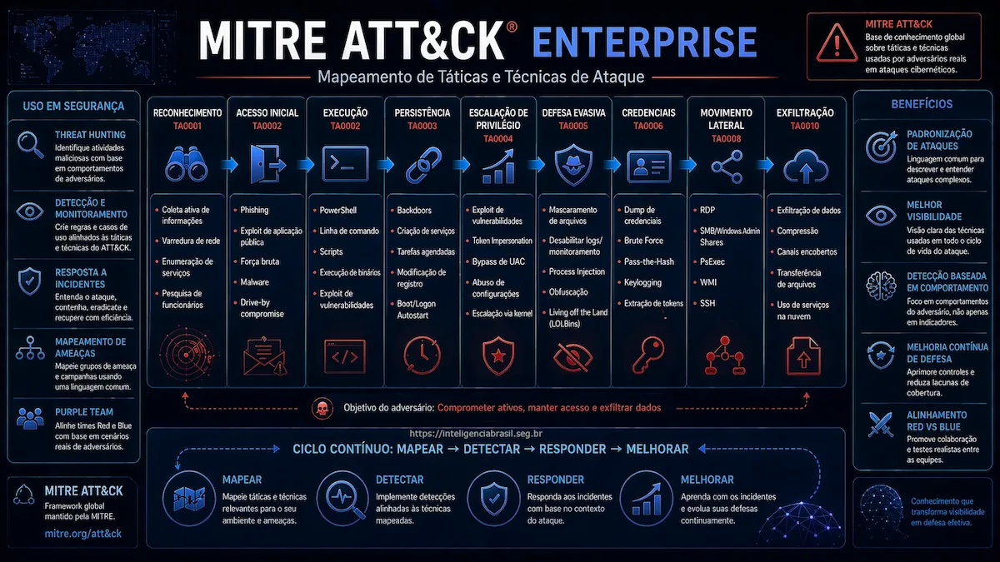

Neste artigo
O que e o MITRE ATT&CK?
O MITRE ATT&CK (Adversarial Tactics, Techniques, and Common Knowledge) é uma base de conhecimento globalmente reconhecida que documenta táticas, técnicas e procedimentos (TTPs) utilizados por adversários em ataques cibernéticos do mundo real. Desenvolvido pela organização sem fins lucrativos MITRE Corporation, o framework se tornou um padrão da indústria para entender e categorizar comportamentos de ameaças.
Diferente de outras abordagens focadas em vulnerabilidades ou indicadores de comprometimento (IOCs), o ATT&CK concentra-se no comportamento do adversário, descrevendo o que os atacantes fazem após obter acesso inicial a um sistema ou rede. Esta perspectiva comportamental permite que organizações desenvolvam defesas mais robustas e resilientes.
ATT&CK significa Adversarial Tactics, Techniques, and Common Knowledge. O framework foi lançado publicamente em 2015 e hoje contém mais de 700 técnicas e sub-técnicas documentadas, cobrindo ambientes Windows, Linux, macOS, Cloud, Mobile e ICS (Sistemas de Controle Industrial).
Estrutura do Framework
O MITRE ATT&CK é organizado em uma matriz que relaciona táticas (o objetivo do adversário) com técnicas (como o adversário atinge esse objetivo). Cada técnica pode conter múltiplas sub-técnicas que detalham variações específicas de implementação.
Componentes Principais
- Táticas: Representam o objetivo tático do adversário durante um ataque. São as colunas da matriz ATT&CK.
- Técnicas: Descrevem como os adversários atingem seus objetivos táticos. Uma única técnica pode ser usada em múltiplas táticas.
- Sub-técnicas: Fornecem descrições mais específicas do comportamento adversário dentro de uma técnica.
- Procedimentos: São implementações específicas de técnicas por grupos de ameaças conhecidos.
- Mitigações: Controles de segurança que podem prevenir ou detectar técnicas específicas.
- Detecções: Métodos e fontes de dados para identificar o uso de técnicas.
As 14 Táticas do ATT&CK Enterprise
A matriz Enterprise do MITRE ATT&CK contém 14 táticas que representam as diferentes fases de um ataque cibernético. Estas táticas não seguem necessariamente uma ordem sequencial, pois adversários podem alternar entre elas conforme a situação.
Reconnaissance
Coleta de informações sobre o alvo antes do ataque. Inclui pesquisa em fontes abertas, varredura de redes e identificação de funcionários.
Resource Development
Criação de infraestrutura de ataque como domínios, servidores C2, contas falsas e desenvolvimento de malware.
Initial Access
Técnicas para obter acesso inicial a rede alvo. Inclui phishing, exploits em serviços expostos e supply chain compromise.
Execution
Execução de código malicioso no sistema comprometido. Inclui PowerShell, scripts, scheduled tasks e user execution.
Persistence
Manutenção do acesso após reinicializações ou mudanças de credenciais. Registry run keys, scheduled tasks, implants.
Privilege Escalation
Obtenção de permissões elevadas. Exploração de vulnerabilidades, bypass de UAC, token manipulation.
Defense Evasion
Técnicas para evitar detecção. Ofuscação, desabilitação de antivírus, limpeza de logs, process injection.
Credential Access
Roubo de credenciais. Keylogging, credential dumping, brute force, password spraying.
Discovery
Exploração do ambiente comprometido. Enumeração de sistemas, usuários, processos, arquivos e configurações.
Lateral Movement
Movimentação entre sistemas na rede. Remote services, pass-the-hash, remote file copy.
Collection
Coleta de dados de interesse. Screen capture, clipboard data, email collection, local data staging.
Command and Control
Comunicação com sistemas comprometidos. Web protocols, encrypted channels, proxy, domain fronting.
Exfiltration
Transferência de dados para fora da rede. Exfiltration over C2, alternative protocols, physical medium.
Impact
Manipulação, interrupção ou destruição de sistemas e dados. Ransomware, data destruction, defacement.
Técnicas e Sub-técnicas
Cada tática contém múltiplas técnicas que descrevem métodos específicos usados por adversários. As técnicas são identificadas por um código no formato T####, enquanto sub-técnicas seguem o formato T####.###.
Exemplo: T1059, Command and Scripting Interpreter
Esta técnica descreve o uso de interpretadores de comandos e scripts para execução de código. Possui 9 sub-técnicas:
T1059.001PowerShellT1059.002AppleScriptT1059.003Windows Command ShellT1059.004Unix ShellT1059.005Visual BasicT1059.006PythonT1059.007JavaScriptT1059.008Network Device CLIT1059.009Cloud API
Exemplo: T1003, OS Credential Dumping
Técnica para extrair credenciais do sistema operacional. Sub-técnicas incluem:
T1003.001LSASS Memory (Mimikatz)T1003.002Security Account ManagerT1003.003NTDS (Active Directory)T1003.004LSA SecretsT1003.005Cached Domain CredentialsT1003.006DCSync
Dashboard Interativo
Para facilitar a exploração e compreensão do framework MITRE ATT&CK, disponibilizamos um dashboard interativo que permite navegar por todas as táticas, técnicas e sub-técnicas de forma visual e intuitiva.
Explore o MITRE ATT&CK Enterprise
Navegue pela matriz completa com todas as táticas, técnicas e sub-técnicas. Visualize detalhes, exemplos de procedimentos e grupos de ameaças associados.
Acessar Dashboard InterativoCasos de Uso
O MITRE ATT&CK pode ser utilizado de diversas formas por equipes de segurança. Abaixo estão os principais casos de uso do framework:
Avaliação de Defesas
Mapeie seus controles de segurança existentes contra as técnicas do ATT&CK para identificar lacunas de cobertura e priorizar investimentos em segurança.
Red Team Operations
Utilize o framework para planejar exercícios de red team baseados em comportamentos reais de adversários, garantindo que os testes sejam relevantes e realistas.
Threat Hunting
Desenvolva hipóteses de caça a ameaças baseadas em técnicas específicas, criando queries e detecções para identificar atividades maliciosas proativamente.
Threat Intelligence
Padronize a descrição de comportamentos de ameaças usando a taxonomia do ATT&CK, facilitando o compartilhamento e correlação de inteligência.
Engenharia de Detecção
Crie regras de detecção específicas para técnicas do ATT&CK, garantindo que seu SIEM ou EDR possa identificar comportamentos adversários conhecidos.
Treinamento e Educação
Use o framework como base para capacitação de equipes de segurança, fornecendo contexto sobre como adversários realmente operam.
Como Implementar
A implementação do MITRE ATT&CK em uma organização deve ser gradual e alinhada aos objetivos de segurança. Recomendamos a seguinte abordagem:
1. Mapeamento Inicial
Comece mapeando seus controles de segurança existentes, como firewalls, EDR, SIEM, contra as técnicas do ATT&CK. Identifique quais técnicas você consegue detectar, prevenir ou nenhuma das duas.
2. Priorização por Risco
Nem todas as técnicas são igualmente relevantes para sua organização. Priorize baseando-se em:
- Técnicas usadas por grupos de ameaças que historicamente atacam seu setor
- Técnicas mais comuns em incidentes recentes
- Técnicas que exploram vulnerabilidades em sua infraestrutura específica
3. Desenvolvimento de Detecções
Para cada técnica priorizada, desenvolva detecções específicas considerando:
- Fontes de dados necessárias (logs de processo, rede, autenticação)
- Lógica de detecção e possibilidade de falsos positivos
- Integração com sua plataforma SIEM ou SOAR
4. Validação Contínua
Realize testes periódicos usando ferramentas como Atomic Red Team, Caldera ou exercícios de red team para validar se suas detecções funcionam corretamente contra as técnicas mapeadas.
Importante
O MITRE ATT&CK é uma ferramenta de referência, não uma checklist. Não é necessário nem prático implementar detecções para todas as técnicas. Foque nas que representam maior risco para sua organização e evolua gradualmente.
Conclusão
O MITRE ATT&CK se consolidou como a linguagem comum da indústria de segurança cibernética para descrever comportamentos de adversários. Ao adotar este framework, organizações conseguem:
- Entender melhor como adversários realmente operam
- Identificar lacunas em suas capacidades de detecção e resposta
- Priorizar investimentos em segurança baseados em ameaças reais
- Melhorar a comunicação entre equipes técnicas e executivas
- Validar a eficácia de controles de segurança de forma objetiva
O framework é continuamente atualizado pela MITRE com novas técnicas e grupos de ameaças, refletindo a evolução do cenário de ameaças. Manter-se atualizado é fundamental para uma postura de segurança eficaz.